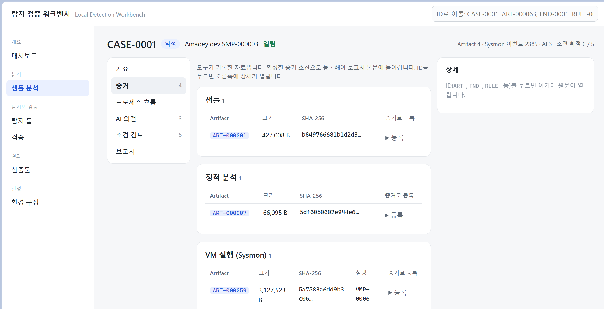
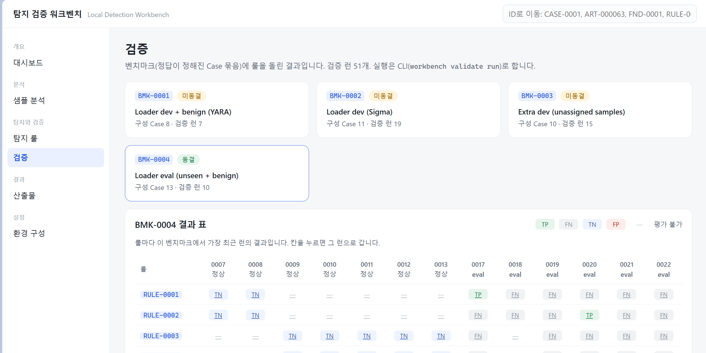
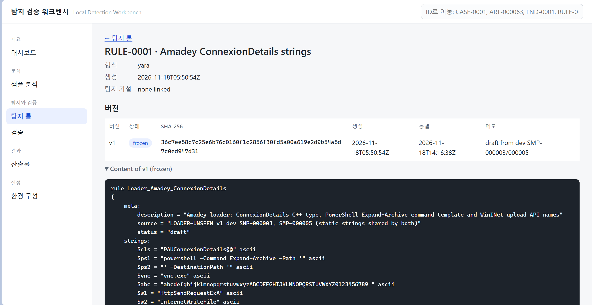

02 · Pipeline
탐지 파이프라인
1 증거수집·정규화
2 가설근거 연결
3 룰YARA · Sigma
4 검증악성·정상 데이터
5 수정재검증·버전 기록
1 · 증거 수집
- 정적 PE 정보 — 해시, 섹션, Import, 문자열, 엔트로피, 서명을 Case 단위로 모은다.
- Sysmon 이벤트 — 원본 EventRecordID로 추적해, 어떤 이벤트에서 나온 근거인지 되짚을 수 있게 한다.
- 정규화 범위 — Sysmon ID 1·11을 먼저 정규화했고, 이후 3·5·7·12–14·22를 추가했다.

2 · 탐지 가설
- 작성 원칙 — 가설은 증거와 연결해서 쓴다. 근거 없는 추측은 가설로 등록하지 않는다.
- 기록 항목 — 어떤 증거가 어떤 행위를 뒷받침하는지, 정상 행위와 어떻게 다른지를 함께 적는다.
- 추적 — 증거에서 룰, 검증 결과까지 연결 관계를 그래프로 남겨 역추적할 수 있다.

3 · 룰 작성과 버전 관리
- 버전 관리 — YARA와 Sigma 룰을 버전으로 관리하고, 동결한 뒤에 평가에 쓴다.
- 수정 기록 — 고칠 때는 새 버전으로 남기고 변경 이유를 함께 적는다.
- 동결의 이유 — 평가 중에 룰이 바뀌면 결과가 어느 버전의 성능인지 알 수 없기 때문이다.

4 · 악성·정상 데이터 검증
- 기록 방식 — TP·FP·FN·TN을 분모와 함께 남기고, Dev·Unseen·정상 데이터·튜닝 실행을 나눠서 본다.
- Dev — 상세 분석에 쓴 샘플이다.
- Unseen — 상세 분석 전에 분할해 두고, 룰을 동결한 뒤 한 번만 평가한다.
- 정상 데이터 — 시스템 바이너리와 VM 정상 시나리오를 쓴다.
벤치마크 BMK-0004(동결, Unseen + benign)의 룰 × Case 결과는 결과·한계 구역에서 설명한다.
5 · 수정과 재검증
- 검토 — 소견을 근거와 함께 검토하고 확정한다.
- 되돌림 — 확정한 항목을 고치면 초안 상태로 돌아가며, 모든 변경이 기록으로 남는다.
- 보고서 반영 — 확정된 소견만 보고서 본문에 들어간다.